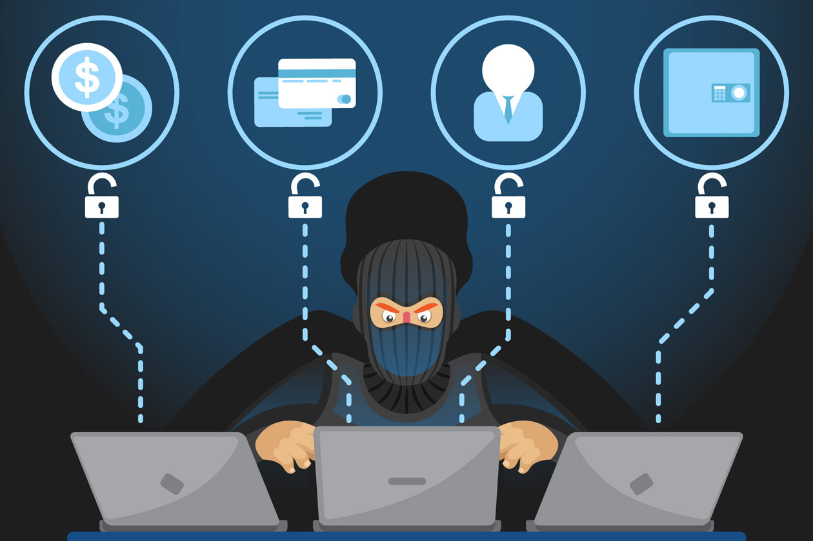

AHORA LES HABLARE SOBRE ALGUNOS TIPOS MAS CONOCIDOS DE CRIPTOMONEDAS
Monedas digitales: Estas son las criptomonedas originales, como Bitcoin y Litecoin, que se utilizan principalmente como medios de intercambio y almacenamiento de valor.
Plataformas de Contratos Inteligentes: Criptomonedas como Ethereum y EOS que no solo actúan como monedas digitales, sino que también proporcionan una plataforma para ejecutar contratos inteligentes y aplicaciones descentralizadas (DApps).
Tokens: Estos son activos digitales emitidos en una plataforma blockchain existente, como Ethereum. Los tokens pueden representar una amplia gama de activos digitales, como monedas estables (stablecoins), tokens de utilidad, tokens de seguridad y más.
Monedas de privacidad: Criptomonedas como Monero y Zcash que se centran en la privacidad y el anonimato de las transacciones, utilizando tecnologías como los anillos de firma y las direcciones blindadas.
Monedas de intercambio descentralizado (DEX): Estas criptomonedas, como 0x y Kyber Network, se utilizan en plataformas de intercambio descentralizado para facilitar el intercambio de activos digitales sin la necesidad de un intermediario centralizado.
Plataformas de intercambio de valor: Criptomonedas como Ripple y Stellar, que se centran en facilitar transferencias transfronterizas y liquidaciones de pagos en tiempo real entre instituciones financieras y bancos.
Monedas de recursos naturales: Algunas criptomonedas están respaldadas por activos del mundo real, como oro (por ejemplo, Tether Gold) o petróleo (por ejemplo, Petro).
Monedas de comunidad: Estas criptomonedas, como Dogecoin, están destinadas principalmente para uso en comunidades en línea y tienen una base de usuarios dedicada y una fuerte cultura en torno a ellas.
AQUI ESTAN CLASIFICADOS MEDIANTE COLUMNAS:
MONEDAS DIGITALES
PLATAFORMAS DE CONTRATOS DIGITALES
TOKENS
MONEDAS DE PRIVACIDAD
MONEDAS DE INTERCAMBIO DESCENTRALIZADO
PLATAFORMAS DE INTERCAMBIO DE VALOR
MONEDAS DE RECURSOS NATURALES
MONEDAS DE COMUNIDAD
BITCOIN
ETHERUM
CHAILINK
MONERO
0X
RIPPLE
TETHER GOLD
DOGECOIN
LITECOIN
EOS
USDC
ZCASH
KYBER NETWORK
STELLAR
PETRO
BANANO
VIDEO QUE EXPLICA MEJOR LOS TIPOS DE CRIPTOMONEDAS:
APLICACIONES Y USOS DE LAS CRIPTOMONEDAS.
Las criptomonedas han surgido como una innovación significativa en el mundo financiero, proporcionando diversas aplicaciones y usos que están transformando la manera en que realizamos transacciones y manejamos el dinero. Aquí se presentan las aplicaciones y usos más destacados de las criptomonedas:
1. Medio de Pago:
Las criptomonedas, como Bitcoin y Litecoin, se utilizan cada vez más como medios de pago para bienes y servicios. Algunas de las características que las hacen atractivas para este uso incluyen:
Rapidez: Las transacciones con criptomonedas pueden ser procesadas en cuestión de minutos, independientemente de las fronteras geográficas.
Bajos Costos: Las tarifas de transacción suelen ser menores que las de los métodos tradicionales de pago, especialmente para transferencias internacionales.
Accesibilidad: Cualquiera con acceso a internet puede utilizar criptomonedas para realizar pagos, eliminando la necesidad de tener una cuenta bancaria.
Empresas de diversos sectores, desde comercios electrónicos hasta restaurantes y servicios digitales, aceptan criptomonedas como forma de pago.
2. Transferencias Internacionales y Remesas:
Las criptomonedas ofrecen una solución eficiente para enviar dinero a nivel internacional:
Sin Intermediarios: Las transacciones se realizan directamente entre el remitente y el destinatario, sin necesidad de intermediarios como bancos o servicios de transferencia de dinero.
Costos Reducidos: Las tarifas para enviar criptomonedas internacionalmente son significativamente más bajas en comparación con los servicios tradicionales como Western Union o bancos.
Velocidad: Las transferencias pueden completarse en minutos, en lugar de días.
Esto es especialmente beneficioso para las personas que envían remesas a sus familias en otros países, quienes pueden recibir el dinero de manera rápida y económica.
3. Micropagos y Economía Digital
Las criptomonedas permiten realizar micropagos, que son pagos de cantidades muy pequeñas de dinero. Esto es particularmente útil en la economía digital:
Contenido Digital: Los creadores de contenido pueden recibir pagos por artículos, música, videos y más, en fracciones de criptomonedas, permitiendo nuevas formas de monetización.
Aplicaciones y Juegos: En las aplicaciones móviles y juegos en línea, los usuarios pueden hacer micropagos para comprar artículos digitales, desbloquear niveles o funciones adicionales.
Los micropagos son difíciles de manejar con sistemas tradicionales debido a las altas tarifas de transacción, pero con criptomonedas se vuelven viables.
4. Contratos Inteligentes y Finanzas Descentralizadas (DeFi)
Las plataformas de criptomonedas como Ethereum han introducido la posibilidad de crear contratos inteligentes:
Contratos Inteligentes: Son programas que se ejecutan automáticamente cuando se cumplen ciertas condiciones predefinidas. Esto permite automatizar una amplia gama de transacciones y acuerdos sin necesidad de intermediarios.
DeFi: Las Finanzas Descentralizadas (DeFi) son aplicaciones financieras construidas sobre blockchain que permiten realizar actividades como préstamos, ahorros, trading y seguros de manera descentralizada. Ejemplos incluyen plataformas de préstamos como Aave y protocolos de intercambio como Uniswap.
Estas aplicaciones están transformando el sistema financiero al proporcionar servicios más accesibles, transparentes y eficientes.
SEGURIDAD EN CRIPTOMONEDAS
La seguridad es un aspecto crítico en el mundo de las criptomonedas debido a la naturaleza digital y descentralizada de estas monedas. A continuación, se presentan los principales riesgos de seguridad asociados con las criptomonedas y las mejores prácticas para mitigarlos. Ahora les muestro los principales riesgos de seguridad:
1. Hackeos y Robos

Exchanges: Los intercambios de criptomonedas (exchanges) son objetivos comunes para los hackers. Si un exchange es hackeado, los fondos de los usuarios pueden ser robados.
Wallets: Las carteras digitales (wallets) también pueden ser vulnerables. Los hackers pueden atacar tanto carteras calientes (conectadas a internet) como carteras frías (almacenadas offline).
2. Phishing
Ataques de Phishing: Los atacantes pueden crear sitios web falsos o enviar correos electrónicos engañosos para engañar a los usuarios y obtener sus credenciales de acceso a sus carteras o exchanges.
3. Malware
Software Malicioso: Los hackers pueden utilizar malware para acceder a las claves privadas de las carteras de criptomonedas almacenadas en los dispositivos de los usuarios.
4. Errores Humanos
Claves Privadas: Perder o compartir accidentalmente las claves privadas puede resultar en la pérdida total de los fondos.
Envío a Direcciones Incorrectas: Debido a la irreversibilidad de las transacciones en blockchain, enviar criptomonedas a una dirección incorrecta puede resultar en la pérdida permanente de esos fondos.
TECNOLOGIA BLOCKCHAIN.
La tecnología blockchain es la columna vertebral de las criptomonedas y una de las innovaciones más importantes en la tecnología de la información en las últimas décadas. A continuación, se presenta una descripción detallada de los aspectos fundamentales de la tecnología blockchain, sus tipos y mecanismos de consenso.
Fundamentos de la Tecnología Blockchain
Definición de Blockchain
Blockchain: Es un libro de contabilidad digital distribuido y descentralizado que registra todas las transacciones a través de una red de ordenadores. Cada bloque contiene un conjunto de transacciones y se enlaza al bloque anterior, formando una cadena de bloques.
Estructura de un Bloque
Datos: Información de las transacciones registradas.
Hash: Identificador único del bloque generado a partir de su contenido.
Hash del Bloque Anterior: Vincula el bloque actual con el anterior, asegurando la integridad de la cadena.
Propiedades clave
Descentralización: No existe una autoridad central que controle la blockchain. Cada nodo de la red tiene una copia del libro de contabilidad.
Transparencia: Todas las transacciones son visibles públicamente, lo que aumenta la transparencia.
Inmutabilidad: Una vez que una transacción es registrada en un bloque y este bloque es añadido a la cadena, no puede ser alterada sin modificar todos los bloques siguientes, lo cual es extremadamente difícil de lograr.
Tipos de Blockchain
Blockchain Pública
Acceso Abierto: Cualquiera puede unirse a la red y participar en el proceso de validación de transacciones.
Ejemplos: Bitcoin, Ethereum.
Descentralización Total: No hay una entidad central que controle la red.
Blockchain Privada
Acceso Restringido: Solo los miembros aprobados pueden unirse a la red.
Control Centralizado: Una organización controla quién puede leer y escribir en la blockchain.
Ejemplos: Utilizadas por empresas para aplicaciones internas, como Hyperledger Fabric.